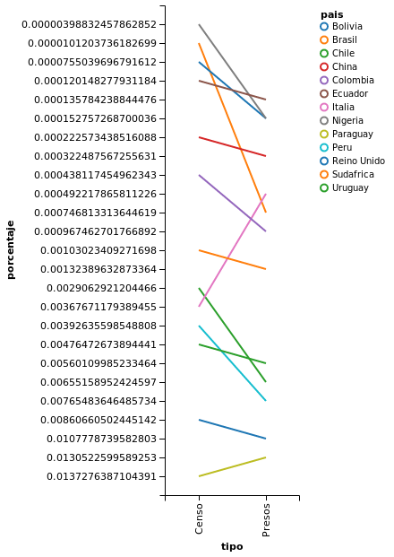

Query 2
Comparacion de porcentajes de presos y habitantes censados por nacionalidad en Argentina durante el 2010


Análisis
A partir de esta visualizacion podemos apreciar que el porcentaje de habitantes y presos es bastante similar con una diferencia de 1.33% porciento para Argentina y una diferencia menor al 0.37% para el resto de los paises.
Hubiese sido ideal poder verificar que esta correlacion se mantuviera en el tiempo pero solo se contaba con informacion de un censo luego del 2002 (sneep provee datos a partir de dicha fecha).
Datos
Descargar JSON: query2a.json
Descargar JSON: query2b.json